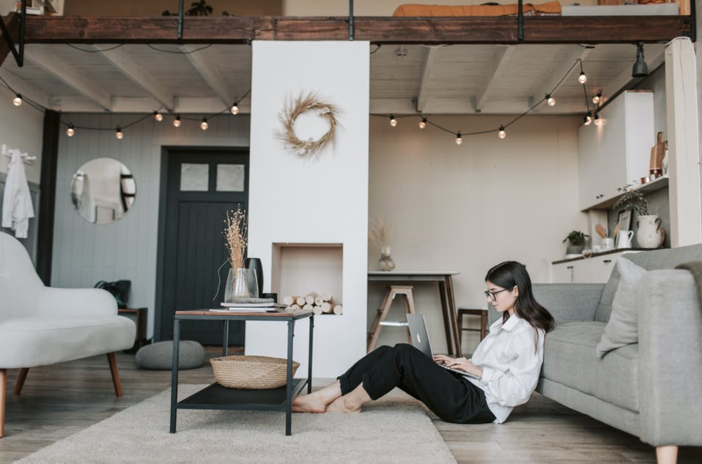

从2022-03-06到今天,已经整整3个月了.生活在上海,对于@Home大家都不陌生,甚至都有一定的心理预期和准备,但竟然@Home这么久的时间还是始料未及的.我居家的第一天,和团队的小伙伴开远程会议,提起我被Work@Home的时候,大家普遍的反应都是正常与平静.更有同事把这些@Home看成是变向的福利,正好可以利用@Home的这段时间好好休息一下,完了满血复活.不过这次事情的进展不同以往.两星期后,全体同事被通知Work@Home,就这样一直到现在.虽然我和团队里面的大部分同事都一起5年以上了,更有小部分7-8年的老同事,彼此相对熟悉.但毕竟我去年年底才接手这部分业务及其团队,本来就充满了各种的挑战,现在又雪上加霜的增加了空间上的隔离,难度陡增.对于团队,新来一个leader还未曾熟悉就开启了线上模式,也是各种的棘手.幸好,我们还有相互信任,相互帮助,相互成就,一起度过这个难关.

Work@Home最大的问题是环境的改变.从熟悉的办公室环境一下子换到更熟悉的家里环境,很多人都觉得是一件听上去很棒的事.大家也确实从激动和兴奋开始,想着终于实现了小时候”在家上班”的梦想.未曾预料家里的环境相比办公室的环境还是复杂了很多:
- 如果只是一个人,总能在某个感受到孤寂.不至于到家里的衣服,家具,杯子和你说话的程度,但长时间一个人确实有一种说不出的孤单与寂寞.伴随这孤寂出现的是吃饭问题.单身的同事一日三餐都是在办公区外卖解决,家对于他们来事只是一个睡觉的地方.所以@Home后先不说有没有食材的问题,就是买回来了会不会做,做出来的能不能吃还是一个灵魂拷问.大他们却不是最惨的一类人,至少还有一个安静的,适合自己的工作环境;
- 如果是夫妻两个人,或者是和同事,同学,朋友一起合租,寂寞这种事情应该不会出现,自己做饭依然是一个很大问题.夫妻或者男女朋友的话会相对好一点,不过也有忙到2个人没时间做饭的窘境;如果是两个男同事或者朋友在一起合租,那请参考上一条;
- 如果家里有小孩,那么一般都会有老人在一起照顾孩子,那吃饭问题是不会存在的.不过有没有一个适合工作的环境主要取决于孩子的大小,咿咿呀呀的童稚和已经上学的学童那完全是两个不同的概念和风景.如果家里有2个或2个以上的小孩,看看我某个同事的pyq......,祈祷他能不去600号吧,毕竟这个已经是上海最后的家底了;
激动和兴奋会很快在现实的抓狂下消失,几乎每个人都会出现一段时间无奈和压抑.据我观察,这段时间长短不一,取决于家庭的情况和个人的适应能力.一般会在@Home一个星期到一个月之内表现的特别明显,然后逐渐适应开始缓和,甚至消失.如果需要长时间Work@Home,请注意这个时间段内的一切事宜,特别是要控制自己的脾气,心情和行为.如果你是管理者,在这段时间内要格外关心团队成员,尽量做到感同身受的有的放矢.非必要不打扰他,更进一步的话需要主动关心他们,帮助他们放松和舒压.在远程关系的现状下,可以通过线上会议结束后的大家群聊来增加娱乐性,也可以不定期的和大家一起突然打开摄像头,看看大家@Home的着装,大家开心的笑一笑.如果条件允许,在不影响家庭和睦的情况下可以组织大家集体开黑,集体斗地主等活动.如果工作不是特别的紧张,可以私下干脆不用派遣很多的任务,让他们有时间和精力能适当的休息一下,陪陪家人.
@Home过程中,工作和生活基本是无法分清的.首当其冲的当然就是开会.在办公室深恶痛绝的是开会,@Home了深恶痛绝的也是它.@Home一段时间后,整个公司对于@Home的同事做了一个调查,普遍反应的问题就是正常的工作还是比较能hold的,但是会议的频率快吃不消了.有夸张的同事,从早晨9:00到晚上7:00几乎连轴转的一直在开会(PS:我也经历过类似的几天),从而根本没有时间做实际的工作.没有了公司的那种吼一嗓子或者是直接走过去就能沟通的环境,现在做什么沟通都需要通过在线完成.有负责项目多的同事,会议都需要靠排期,靠凑时间来预定.可他们是一线开发人员啊,最重要的本职工作是开发而不是开会,但是目前的现实情况无法让他们像在公司一样的开展工作.
大部分的同事会在@Home一段时间后,差不多是居家6周左右的时间点开始怀念去公司上班的日子,笑称:在公司抢不到会议室没办法开会,直接就是几个人站着说两句就解决了;一个小毛小病的直接走过去说两句也可以.现在搞的人随会议转,很大程度上降低了工作的效率.随着科技的发展,线上会议的模式确实给我们Work@Home解决了最基本的设施,但同时出现的问题也是相当的严重.会议多造成的问题很难解决,我们已经3个月了也没出现很大的转变迹象,只能人为的控制一下尽量不去参加没必要的会议和旁听的会议,除此之外,办法真的不多.
然而开发还是要继续做,所以在正常的项目排期压力下,因为更多的时间被会议占据,为了赶工期,白天花掉的时间势必会利用晚上原本属于自己的时间开夜车赶工补回来.很多同事也是无奈的这么做的.项目的分工越细,进展和细节的沟通成本越高,所以这就是一个两难的局面.作为一个管理者,必须从自身做起,降低自己对于团队的会议次数.就我们团队而言,每天固定花半个小时过一下今天的工作和明天的安排,剩下的时间都不去打扰大家.尽量让大家的工作时间充裕,虽然做不到尽善尽美,但是能少一个会议就尽量少一个会议吧,从我做起,长此以往,事应该会有所改观.
随着@home的时间越来越长,团队的目标是会有模糊的可能的.一部分的原因是大家都是松散的个体存在,而不是像以往长期在一起的战友;另外就是前期带回家的工作基本完成的差不多了,很多项目也告一个段落,但后期的目标和需求还未确定,就出现了目标空窗期的情况.这在团队中也发生了.有一些同事会感到短暂的迷茫,空间上不能在一起的现实影响了团队的凝聚力和对于实现目标的饥渴感.特别是在项目初期,需要长期且繁杂的沟通,大家都会感觉到有一些无助和无力.一个很简单的问题,原本大家坐在一起三五分钟就能解决,现在需要一遍一遍的写文档,对文档,查阅文档,然后开会讨论,拉各种各样的群.据我观察,这段时间内,团队内部在线文档的使用频率和使用量已经达到有史以来的最高水平,就这样还是有细枝末节的地方会考虑不周和被遗漏.这种情况的治理,我们团队内部有同学提出来让部门leader和大家一起开个全员会,和大家同步一下目前公司的情况,公司下一步的计划和方向.我们也采纳了该同学的意见,并且在会上还互动了一把Q&A环节.希望能在一定的程度上把”散装”的大家重新拉到一起.
另一个可能需要关注的是心里焦躁问题.还好作为程序员的我们大部分都还是一个”宅”字当家,所以相对其它工种的人群会好一些.加上本身工作就要求需要长时间保持专注度和思考力,导致对于环境相对安静的要求比较高,所以很多同事都是可以接受@Home的现实.不过时间久了,往往都是会变味的.当真的失去自由的时候,再多原本的需求都会变的没那么的重要了.在同样一个环境里面待久了总归会出现一些问题,最多的表现就是焦躁.期间的表现会有各种的莫名其妙,比如想大声的吼几句,喊几声什么的,其实都是一种需要压抑久了需要释放的表现.作为团队的管理者,需要时刻注意大家的心理预期和行为表现,适当的和大家拉一拉家常,扯一扯八卦,聊一聊乱七八糟的事情.哪怕大家一起骂一骂也是一种压力的释放.在不能改变环境的情况下,正常而理智的发泄行为是解决焦躁最好的办法.
Work@Home对于团队效率的影响是显而易见的,作为管理者,每日的日会和日报是必须的.虽然个人非常不喜欢日报和日会的形式,纯粹是心理认为每天这样做,人好像不是来工作的而是被监视的工具.但在@Home的情况下,这种措施成为了无奈的唯一选择.日会和日报,一来可以提醒大家虽然@Home,但是这不是放假,大家还是需要工作的,防止空间上的散演变成工作上的散;二来可以通过日报和日会的形式更精确的了解大家.日会的形式可以多样化一些,最好是能把日会开成大家一起聊一聊事情,千万不能开成那种严肃和八股的定期会议,这种形式虽然看上去好像大家很努力,很严肃,很职业,当却是在无形中对大家造成了不必要的压力.我们的日会不定期的会把大家聊项目的时间相对压缩一点,抱着没有问题快速一条过的原则,尽量的能空出一点时间大家一起聊一聊家常,聊一聊小区发生了什么事,身边发生了什么事.说一说笑话,关心一下团队内部人员的情况,家庭的情况,家里的小孩,家里工作环境等等的情况.我们也会不定期的突击让大家打开摄像头,看一看大家的精神面貌,了解这些情况有助于管理者能更准确的掌握整个团队的动态,让团队的成员能感觉他不是一个孤立的个体,我们大家还是一条船上的战友.
一直以来,觉得互联网团队应该是最能Work@Home的,但是经过了这3个月的实践发现,不管是哪行哪业,一个固定的交流点是必不可少的,这就是公司办公地点存在的核心价值.虽然随着科技的发展,Work@Home已经能够轻而易举的实现,但目前还是有这样或者那样的问题,大家的应对策略也不健全,对于项目的效率与进度还是有很大的干扰.就算真的提倡Work@Home,也不能一直@Home,也要不定期的回公司和同事们在一起,一个星期2天去公司3天在家工作应该是一个比较好的平衡,去公司好处的是可以在短期内在同事间建立互信的基础,减少沟通的成本,@Home的话,你永远都是一个单兵,不是一个集团作战.
到今天为止,我们团队虽然都Work@Home已经2月有余,总体上还是稳定运转未出岔子,@Home没有造成delay严重的情况,也没有项目无法推进的现象.我们这群小伙伴们是非常给力的,是能克服眼前的困难同舟共济.最重要的是团队内部没有任何一位同事和他们的家人出现染疫的情况.此处应该给大家一些掌声......